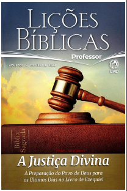

EBD | 4° Trimestre De 2022 | CPAD – Adultos
Tema do Trimestre: A Glória e a Justiça de Deus – A Igreja e a Convocação do Profeta Ezequiel para um Despertamento Espiritual
Comentarista: José Gonçalves.
LIÇÕES DO TRIMESTE: A Glória e a Justiça de Deus
- Lição 01: Ezequiel, o Atalaia de Deus:
- Lição 02: Vem o Fim:
- Lição 03: As Abominações do Templo:
- Lição 04: Quando se Vai a Glória de Deus:
- Lição 05: Contra os Falsos Profetas:
- Lição 06: A Justiça de Deus:
- Lição 07: A Responsabilidade é Individual:
- Lição 08: O Bom Pastor e os Pastores Infiéis:
- Lição 09: Gogue e Magogue: Um Dia de Juízo:
- Lição 10: A Restauração Nacional e Espiritual de Israel:
- Lição 11: A Visão do Templo e o Milênio:
- Lição 12: Imersos no Espírito nos Últimos Dias:
- Lição 13: O Senhor está Ali:
Escola Biblica Dominical 16 de Outubro de 2022|Lição 03: As Abominações do Templo
TEXTO ÁUREO
”E disse-me: Filho do homem, vês tu o que eles estão fazendo? As grandes abominações que a casa de Israel faz aqui, para que me afaste do meu santuário? Mas verás ainda maiores abominações.”(Ez 8.6)
VERDADE PRÁTICA
O lugar mais sagrado da Terra Santa se tornou o centro das abominações e isso serve como prenúncio da apostasia generalizada do fim dos tempos.

LEITURA DIÁRIA
- Segunda – Ez 23.37-39 A chocante descrição das práticas abomináveis no Templo
- Terça – Sl 106.19,20 O culto do bezerro fazia parte desse pacote de abominações
- Quarta – Jz 8.33 A prostituição era parte do culto aos deuses
- Quinta – Jr 3.8 O culto pagão é o mesmo que prostituição espiritual
- Sexta – Hc 1.2-4 A corrupção nos vários segmentos da sociedade era parte das abominações
- Sábado – Ap 17.4,5 A Grande Babilônia é a mãe das prostituições e abominações da terra
LEITURA BÍBLICA EM CLASSE - Ezequiel 8.5,6,9-12,14,16

5 – E disse-me: Filho do homem, levanta, agora, os teus olhos para o caminho do norte. E levantei os meus olhos para o caminho do norte, e eis que da banda do norte, à porta do altar, estava esta imagem de ciúmes, à entrada.
6 – E disse-me: Filho do homem, vês tu o que eles estão fazendo? As grandes abominações que a casa de Israel faz aqui, para que me afaste do meu santuário? Mas verás ainda maiores abominações.
9 – Então, me disse: entra e vê as malignas abominações que eles fazem aqui.
10 – E entrei e olhei, e eis que toda forma de répteis, e de animais abomináveis, e de todos os ídolos da casa de Israel estavam pintados na parede em todo o redor.
11 – E setenta homens dos anciãos da casa de Israel, com Jazanias,filho de Safã, que se achava no meio deles, estavam em pé diante das pinturas, e cada um tinha na mão o seu incensário; e subia uma espessa nuvem de incenso.
12 – Então, me disse: Viste, filho do homem, o que os anciãos da casa de Israel fazem nas trevas, cada um nas suas câmaras pintadas de imagens? E eles dizem: O SENHOR não nos vê, o SENHOR abandonou a terra.14 – E levou-me à entrada da porta da Casa do Senhor, que está da banda do norte, e eis que estavam ali mulheres assentadas chorando por Tamuz.
16 – E levou-me para o átrio interior da Casa do SENHOR, e eis que estavam à entrada do templo do SENHOR, entre o pórtico e o altar, cerca de vinte e cinco homens, de costas para o templo do SENHOR e com o rosto para o oriente; e eles adoravam o sol, virados para o oriente.
Hinos Sugeridos: 10, 124, 422 da Harpa Cristã
INTRODUÇÃO
A literatura apocalíptica se caracteriza pela presença de símbolos, sonhos e visões. O Livro de Apocalipse é um exemplo clássico desse modelo literário. Ezequiel inaugurou esse estilo no Antigo Testamento, quando começa e termina o seu livro com oráculos divinos apocalípticos, capítulos 1 e 40-48, além de 8-11. O capítulo 8 inicia uma nova seção nessa modalidade, meio pelo qual Deus revelou ao profeta as abominações do Templo de Jerusalém. O objetivo da presente lição é levar os crentes em Jesus a uma reflexão mais profunda sobre a ruína moral e espiritual da idolatria por meio da análise dessas abominações chocantes.
Palavra Chave:
IDOLATRIA
I – SOBRE A VISÃO
1- A segunda visão.As visões dos capítulos 1-11 são partes de uma única unidade literária. O profeta recebeu essa visão 14 meses depois da primeira, a visão da carruagem da glória de Deus ”no quinto ano do cativeiro do rei Joaquim” (Ez 1.2), e o capítulo 8 introduz uma nova visão no ”sexto ano, no mês sexto” (Ez 8.1). Mas essa visão não foi da glória de Deus, o que Ezequiel viu foram as abominações praticadas no Templo, o que justifica a razão da ira divina sobre os moradores de Jerusalém (Ez 8.18). Essa data é importante porque mostra que a cidade e o Templo ainda não haviam sido destruídos. Essa visão é preterista porque se relaciona com os acontecimentos contemporâneos de Ezequiel, mas isso não exclui o futurismo, pois anuncia eventos que estavam para acontecer (Ez 8.18).
2- As visões das abominações do Templo.A visão no capítulo 8 destoa das demais visões do próprio Ezequiel e demais profetas do Antigo Testamento. Ele foi levantado pelo Espírito Santo entre o céu e a terra e levado a Jerusalém numa visão (8.1-3). As visões de Deus mostram fatos que estão acontecendo no ato da revelação e que ainda vão acontecer, a curto, médio ou longo prazo e até mesmo no contexto escatológico. Daniel teve visões de coisas futuras (Dn 7.1,15-28; 8.1,15-27), e da mesma forma o apóstolo João, cujas visões são de fatos passados, presentes e futuros: ”Escreve as coisas que tens visto, e as que são, e as que depois destas hão de acontecer” (Ap 1.19).
3- Como entender as visões de Deus? Ezequiel foi transportado em espírito da Babilônia para o Templo de Jerusalém, mas há quem afirme ter sido em corpo, incorpore. Era uma visão em tempo real (11.1), mas não foi física, e isso fica claro porque o profeta diz “me trouxe a Jerusalém em visões de Deus” (8.3), e depois ele retorna à Caldeia (11.24). Essa é a mesma experiência do apóstolo João em Apocalipse (Ap 1.10). Deus introduz o profeta no interior do Templo e lhe mostra quatro dos oficiais da Casa de Deus e algumas mulheres praticando o mais baixo grau de idolatria, razão pela qual a sua destruição se torna inevitável.
SINOPSE I
A visão das abominações do Templo destoa das demais visões do profeta Ezequiel e de outros profetas do Antigo Testamento.
II – SOBRE AS ABOMINAÇÕES (PARTE 1)
1- A imagem de ciúmes (v.5). O termo ciúme, do hebraico qi’nah’ significa “zelo, ciúme ardente, ira”. Essa imagem é semel, em hebraico, “imagem, ídolo”, que muitos expositores do Antigo Testamento identificam como Aserá, deusa também conhecida como “bosque, poste-ídolo”. O rei Manassés pôs, no Templo de Jerusalém, a imagem de madeira de Aserá (2 Rs 21.3,7), mas que foi destruída pelo rei Josias (2 Rs 23.3). Muitos acreditam que, nos dias de Ezequiel, ela tenha sido colocada de volta no Templo. O uso da expressão “imagem de ciúme” se explica porque a idolatria provoca ciúme de Deus pelo seu povo (Ez 5.13; 16.38, 42; 36.6; 38.19).
2- O culto aos animais e aos répteis (v.10) Esse culto pagão mostra o seu aspecto secreto e clandestino. Nessa visão, o profeta precisou cavar um buraco na parede para ver o que se passava nas câmaras do Templo (vv 7,8). Ezequiel viu pintado, na parede no interior da Casa de Deus, toda sorte de animais abomináveis e répteis, além dos ídolos do povo (v.10). A zoolatria significa adoração aos animais. Ela é típica dos egípcios, que viam neles mais que símbolos ou emblemas· eles os consideravam receptáculos das formas do poder divino.
3- Os setenta anciãos (v.11). O ancião em hebraico, zaqen, literalmente, e ”Idoso” ; e em grego, presbyteros, ”o mais velho”. Ambas se referem tanto a pessoas velhas como também a líderes comunitários (Ez 7.26; Êx 19.7; Is 24.23; Jr 19.1). O termo é usado ainda para príncipes (Is 3.14) e líderes nas comunidades cristãs (At 14.23; 20.17). Não se tem informação detalhada sobre os ”setenta homens, dos anciãos da casa de Israel”, e nada há nas Escrituras que indique ser uma referência ao Sinédrio. Quanto a ”Jazanias, filho de Safã”, há pelo menos quatro personagens com esse nome no Antigo Testamento (Ez 11.1; Jr 35.3; o.8). Parece que Safã, nessa passagem, é o mesmo escrivão do rei Josias (2 Rs 22.8-11). Alguns estudiosos não veem motivos suficientes para distinguir esse Safã do escrivão. Se isso puder ser confirmado, Jazanias seria uma ovelha desgarrada como acontece ainda hoje em boas famílias de igreja, de um filho ou filha que se apostatou da fé.
SINOPSE II
As abominações estão ligadas aos ídolos. A afronta maior a Deus é o fato de elas serem praticadas na Casa de Deus.
III – SOBRE AS ABOMINAÇÕES (PARTE 2)III – SOBRE O INIMIGO
1- O ritual de Tamuz (v.14). Tamuz era uma divindade babilônica de origem suméria, deus da vegetação e dos rebanhos. A crença pagã era que ele ficava seis meses morto no submundo no período da seca; e seis meses vivo no período das chuvas. Assim, era realizado, anualmente, um ritual de lamento pelas carpideiras, em favor de Tamuz no segundo dia do quarto mês para que ele ressuscitasse e fizesse chover. As carpideiras eram as pranteadoras profissionais, cuja função era lamentar nos velórios e enterros, para fazer com que os outros também chorem (Jr 9.17; Os 9.4; Mt 9.23; Me 5.38; Lc 8.52). Parece que essas mulheres estavam envolvidas num culto sincrético, visto que a visão é do “sexto mês” (8.1); era uma adoração a Javé e ao mesmo tempo a Tamuz. Os hebreus, depois do cativeiro babilônico, deram ao quarto mês do calendário religioso o nome de Tamuz, junho/julho
2- Os adoradores do sol (v.16).Ezequiel viu cerca de 25 homens de costas para o Templo e virados para o Oriente adorando o sol. Era uma afronta a Deus. Moisés havia alertado o povo a respeito dessa idolatria (Dt 4.19). Havia, no Egito, o templo do sol, beth shemesh, em hebraico, “casa do sol” (Jr 43.13), é termo traduzido por “Heliópolis ” na Septuaginta, vindo do grego, heliou póleõs, “cidade do sol”. Não confundir com a cidade de Bete-Semes, em Judá (2 Rs 14.11). Aqui se trata da antiga cidade egípcia de Om, seu nome hebraico, ou Heliópolis, em grego (Gn 41.45,50 – Septuaginta). A cidade era dedicada ao deus-sol, conhecido também como Rá. Todo esse ritual às falsas divindades revela a apostasia generalizada, todo o sistema estava corrompido, não havia outro remédio a não ser a destruição do Templo e da Cidade (2 Cr 36.16).
3- Os anciãos na casa do profeta. Retornando à abertura da profecia (Ez 8.1), parece que esses anciãos exerciam autoridade espiritual sobre os exilados, visto que não havia, no momento, uma liderança espiritual centralizada. O rei Joaquim estava na Babilônia, mas na condição de prisioneiro. Só após a morte de Nabucodonosor, mais de vinte anos depois, Evil-Merodaque, que o sucedeu no trono, mandou libertar Joaquim da prisão e mudar sua roupa de presidiário (2 Rs 25.27-30; Jr 52.31-34). Os anciãos vinham em busca da palavra com certa frequência à casa de Ezequiel (Ez 14.1- 3; 20.1). No entanto, há quem afirme que não faziam parte da ala dos fiéis, mas que procuravam Ezequiel para se manterem informados. Isso parece ser pouco provável (Ez 14.4,5). Além disso, os falsos profetas atrapalharam a vida espiritual dos exilados assim como em Jerusalém (Jr 29.20-22).
SINOPSE III
Tamuz era de Osíris pelos egípcios; o sol era cultuado na Babilônia e no Egito.
CONCLUSÃO
Aprendemos, com as quatro cenas do pecado cúltico, que um Deus santo não tolera o pecado. Deus exige fidelidade de seu povo. O que aconteceu com Israel nos ensina sobre a responsabilidade na santidade com a adoração e o estilo de vida também para os dias atuais pelos crentes em Jesus.
VOCABULÁRIO
- ORÁCULO:A verdadeira revelação; a palavra de Deus e de seus profetas.
- RECEPTÁCULO: Local para guarda ou conter algo; receptor, recipiente.